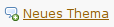
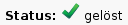
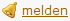

Syntax
Herzlich Willkommen im Forum von ubuntuusers.de. Dieser Artikel dient als Anleitung zu den Basisfunktionen des Forums und sollte aufmerksam gelesen werden. Eingangs sind einige Hinweise zur Bedienung des Forums zu beachten:
Forenregeln - Wie verhalte ich mich im Forum?
Forum/Kurzanleitung - Schnelleinstieg für Eilige
Suche - Zuerst suchen, dann fragen

Richtig fragen - wie man Fragen stellt, die zeitnah beantwortet werden können
Im Forum begegnen einem Moderatoren, Supporter und Mitglieder anderer Teams. Um mehr über diese und deren Funktion zu erfahren, lohnt es sich im Wiki die Seite ubuntuusers/Gesamtteam genauer anzuschauen. Die Navigation oben rechts erlaubt einen schnellen Wechsel zwischen Portal, Forum, Wiki und Ikhaya.
Inyoka¶
 Im Folgenden werden die Formatierung und Möglichkeiten von Inyoka, der Portal-Software von ubuntuusers.de seit 2008, erläutert. Die Formatierungen gelten, anders als früher unter MoinMoin und phpBB, sowohl für das Forum als auch für das Wiki.
Im Folgenden werden die Formatierung und Möglichkeiten von Inyoka, der Portal-Software von ubuntuusers.de seit 2008, erläutert. Die Formatierungen gelten, anders als früher unter MoinMoin und phpBB, sowohl für das Forum als auch für das Wiki.
Der Inyoka Editor ist ein sogenannter WYSIWYM-Editor (=What You See Is What You Mean). Je nachdem, ob man im Wiki oder im Forum ist, sieht die Schaltflächenleiste leicht anders aus.
Im Forum präsentiert sie sich wie folgt:
Das Forum von Inyoka enthält auch eine Reihe von Syntaxelementen, die nur hier verwendet werden. Einige Basisfunktionen werden im Folgenden erläutert:
Thema¶
Eröffnen¶
Bevor man jedoch einen Thread eröffnet sollte man zuerst:
Das Wiki aufsuchen, da dieses eine Fülle von Informationen bereithält.
Die Forensuche benutzen.
Sofern man die gewünschte Information nicht finden konnte und ein neues Thema eröffnen möchte, sollte man sich zuerst überlegen, wohin das Thema passt. Zur Hilfestellung findet man in jeder Rubrik, z.B. bei Xfce ein Thema mit dem Titel Welche Themen gehören hier her und welche nicht?. Im jeweiligen Forum können Fragen zu Problemen gestellt werden.
Nun im passenden Unterforum  anwählen. Es öffnet sich ein Fenster, in das zuerst die Informationen über die verwendete Distribution sowie die Version eingegeben werden um unnötige Nachfragen zu verhindern. Der Titel soll aussagekräftig formuliert sein. Nun im Textfeld das Problem bzw. die Fragestellung konkret erläutern und so viele Informationen wie möglich mitliefern. Bei Ausgaben des Terminals bitte Codeblöcke oder den No Paste Service verwenden – dies erhält die Lesbarkeit des Threads!
Bezüglich der Groß-/ Kleinschreibung sind die Forenregeln zu beachten.
Ist ein Thema gelöst, dies kenntlich machen.
Extras¶
Es gibt einige Zusatzfunktionen beim Eröffnen eines Themas:
| Extras | |
| Auswahl | Beschreibung |
| Umfragen | Umfragen zu einem Thema erstellen. Art und Dauer dabei festlegen. |
| Dateianhänge | Dateien hochladen (z.B. Screenshots) |
Hinweis:
Umfragen sind nur in bestimmten Foren einstellbar. So ist das Einstellen von Umfragen in
allen Support-Foren
Rund ums Wiki
Rund um Ubuntuuusers
Rund um Linux und Open Source
für Nutzer nicht möglich.
gelöst / ungelöst¶
Gelöste Themen erkennt man in der Übersicht des Forenbereichs an diesen Zeichen:
Innerhalb eines Themas dient dieses Symbol als gelöst Markierung: 
Setzen bzw. entfernen kann man die Markierung über die Schaltfläche „ als gelöst markieren“ bzw. „als ungelöst markieren“ in jeden Thema.
als gelöst markieren“ bzw. „als ungelöst markieren“ in jeden Thema.
In der Regel sollte man das Setzen des Gelöststatus dem Threadersteller überlassen, da dieser am besten weiß ob seine Frage beantwortet wurde. Wenn man allerdings auf einen alten, offensichtlich gelösten Thread stößt, kann man den Status natürlich ändern um die Übersicht im Forum zu verbessern.
Antwort¶
Zitate¶
Es kommt oft vor, dass man Teile eines vorherigen Beitrags (eines anderen Nutzers) zitieren möchte, um dann darauf zu antworten. Das Zitat sollte als solches gekennzeichnet werden.
Dazu wählt man zuerst den gewünschten Textabschnitt und fügt ihn im eigenen Beitrag ein. Anschließend markiert man den Bereich im eigenen Beitrag erneut und klickt auf die Schaltfläche "Auswahl Zitat" . In der späteren Ansicht wird das Zitat mit einen grauen Balken am linken Rand gekennzeichnet.
Alternativ kann man das Zitat auch „von Hand“ als solches markieren. Dazu setzt man einfach ein "größer als" Zeichen (>) und ein Leerzeichen vor den Text, die Syntax ist:
> zitierter Text
Melden¶
Sollte ein Beitrag gegen die Forenregeln verstoßen, sollte das den Moderatoren über die "melden" Schaltfläche  mitgeteilt werden. Dies gilt für Threads in denen:
Nutzer beleidigend werden
die Sprache in den Fäkalbereich abrutscht
Beiträge illegale Inhalte enthalten
Beiträge diskriminierende Inhalte enthalten
offensichtlich Spam verbreitet werden soll
Auch Themen die versehentlich doppelt, oder im falschen Forenbereich veröffentlicht wurden, können auf diesem Weg gemeldet werden.
Syntaxelemente¶
Einige Syntaxelemente sind im Forum schon direkt anzuwählen. Alle Elemente können miteinander kombiniert werden. Mit Hilfe dieser Elemente sollte sich jeder Forenbeitrag sinnvoll darstellen lassen.
Eine detaillierte Anleitung zu allen Syntaxelementen, welche in Inyoka implementiert sind, findet man in der Übersicht. Das Minus in der Tabelle kennzeichnet nicht verfügbare Optionen.
| Threadformatierung | |||
| Syntax | Schaltfläche | Ergebnis | Nutzung |
{{{Code}}} | Code | unformatierten Codeblock einfügen | |
{{{Code [mark]Code[/mark] Code}}} | Code Code Code | Element im Codeblock hervorheben - hilfreich bei Problemlösungen. Hinweis: Diese Funktion steht nur in Rohtext-Blöcken ohne Syntaxhighlighting zur Verfügung | |
{{{#!code spracheCode}}} | 1 | Code | Codeblock mit Syntaxhervorhebung und Zeilennummern für "sprache" einfügen (siehe Wiki/Syntax für weitere Details) | |
[:Seitenname:] | System | Link auf die Wikiseite "System" | |
[:Seitenname:Name] | Name | Link auf die Wikiseite "System", anstelle von "System" wird "Name" als Link angezeigt | |
[:Seitenname#Anker:] | System | Link auf den Anker "Optimierung" der Wikiseite "System" | |
[:Seitenname#Anker:Name] | Name | Link auf den Anker "Optimierung" der Wikiseite "System", anstelle von "System" wird "Name" als Link angezeigt | |
[http://www.ubuntuusers.de] | http://www.ubuntuusers.de | Link auf die Portalseite von uu.de | |
[http://www.ubuntuusers.de␣Homepage uu.de] | Homepage uu.de | Link auf die Portalseite von uu.de, wobei anstelle des Links nun der Text "Homepage uu.de" als Link angezeigt wird. Bei ␣ ist ein Leerzeichen zu verwenden. | |
>␣ | Zitat einfügen. Bei ␣ ist ein Leerzeichen zu verwenden. | ||
[[Vorlage(Tasten, "a+b+c")]] | - | A + B + C | Tastenkombinationen darstellen. Eine vollständige Liste alle unterstützten Tasten ist unter Wiki/Tasten zu finden. |
| InterWiki-Links | |||
[topic:Name:Text] | - | Text | Link ins Forum auf den Thread mit dem Namen "Name", "Text" ist optional und wird anstelle des Links angezeigt |
[post:12345:Text] | - | Text | Link ins Forum auf das Posting mit der Nummer "12345", "Text" ist optional und wird anstelle des Links angezeigt |
[forum:Name:Text] | - | Text | Link ins Forum "Name", "Text" ist optional und wird anstelle des Links angezeigt |
[paste:Nummer:Titel] | - | Titel | Link auf den Eintrag "Nummer" mit dem Titel "Titel" im No Paste Service |
[ikhaya:Name_der_Meldung:Text] | - | Text | Link auf eine Ikhaya Meldung, "Text" wird anstelle des Names der Meldung angezeigt, ist aber optional |
[bug:NUMMER:] | - | NUMMER | Link auf einen Bug in Launchpad |
Hinweis:
Eine komplette Liste der InterWiki-Links ist hier zu finden.
Listen¶
Aufzählungsliste¶
Wichtig ist ein führendes Leerzeichen vor jeder Zeile - oder mehrere Leerzeichen, bei Unterpunkten. Bei ␣ ist ein Leerzeichen zu verwenden.
Syntax:
␣* Listenelement1 ␣␣* Listenelement1.1 ␣␣* Listenelement1.2 ␣* Listenelement2
Resultat:
Listenelement1
Listenelement1.1
Listenelement1.2
Listenelement2
Nummerierte Aufzählung¶
Ein führendes Leerzeichen vor jeder Zeile gefolgt von 1. leitet eine nummerierte Liste ein. Bei ␣ ist ein Leerzeichen zu verwenden.
Syntax:
␣1. Listenelement1 ␣␣1. Listenelement1.1 ␣␣1. Listenelement1.2 ␣1. Listenelement2 ␣1. Listenelement3
Resultat:
Listenelement1
Listenelement1.1
Listenelement1.2
Listenelement2
Listenelement3
Zeilenumbrüche¶
Wichtig ist, dass Inyoka grundsätzlich keinen einfachen Zeilenumbruch kennt bzw. nutzt. Ein einfacher Zeilenumbruch, also ein einfaches ⏎ , wird ignoriert, der Text läuft durch. Ein doppelter Zeilenumbruch, also ⏎ ⏎ ergibt einen Absatz.
Dazu ein Beispiel:
Ein Text im Editor der Art:
Hier ist der erste Satz. Eine neue Zeile, die später keine neue ist. Das ist aber ein neuer Absatz.
ergibt in Inyoka folgendes:
Hier ist der erste Satz. Eine neue Zeile, die später keine neue ist.
Das ist aber ein neuer Absatz.
In vielen Fällen ist ein Zeilenumbruch auch gar nicht das, was der Schreiber eigentlich möchte, sondern eigentlich soll häufig eine Datei / Fehlermeldung zitiert werden, dann eignet sich dafür der Codeblock besser (siehe Syntaxelemente) oder es soll tatsächlich eine Auflistung dargestellt werden, dann sind Listen das geeignetere Mittel der Wahl.
In den wenigen Situationen, wo Zeilenumbrüche doch mal sinnvoll sein können, geht dies so:
Hier ist der erste Satz.\\ Das hier ist eine neue Zeile.
Allerdings sollte man damit wirklich sehr sparsam umgehen und dieses auf keinen Fall mitten im Satz verwenden oder nach jedem einzelnen Satz! Denn heutzutage werden Webseiten auf vielen verschiedenen Geräten angezeigt, unter anderem auch Smartphones mit sehr kleinen Bildschirmen. Die Darstellung des Textes sollte man deshalb immer den Anzeigegeräten überlassen ‒ die wissen nämlich am besten, wie lang eine Zeile sein darf.
- Erstellt mit Inyoka
-
 2004 – 2017 ubuntuusers.de • Einige Rechte vorbehalten
2004 – 2017 ubuntuusers.de • Einige Rechte vorbehalten
Lizenz • Kontakt • Datenschutz • Impressum • Serverstatus -
Serverhousing gespendet von